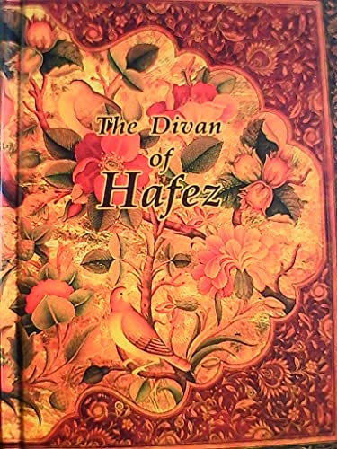

Music
where mind and soul meet.
literature
World of the words.
- Divan of Hafez (Goethe wrote West–Eastern Diwan inspired by Persian poet "Hafez".)
 À la recherche du temps perdu "Marcel Proust"
À la recherche du temps perdu "Marcel Proust" L'éternité "Arthur Rimbaud"
L'éternité "Arthur Rimbaud"
painting & sculpture
Colors make love ... Stones revive
-
 Snow Storm, J.M.William Turner
Snow Storm, J.M.William Turner  La Dama di Shalott, John William Waterhouse
La Dama di Shalott, John William Waterhouse  The Dying Slave, Michelangelo Buonarroti
The Dying Slave, Michelangelo Buonarroti